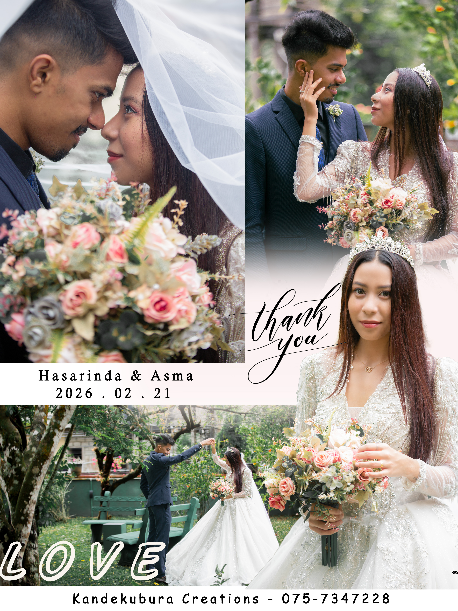
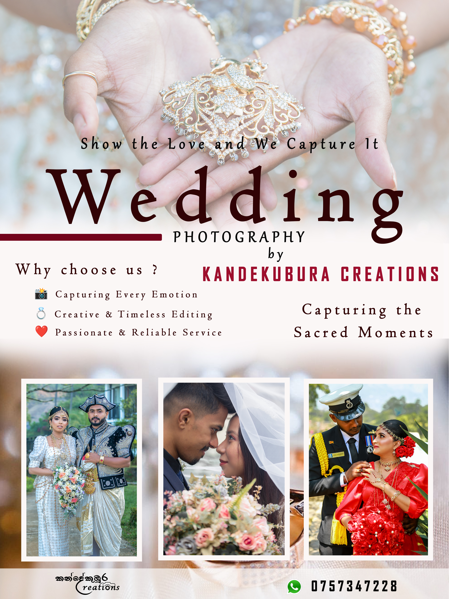
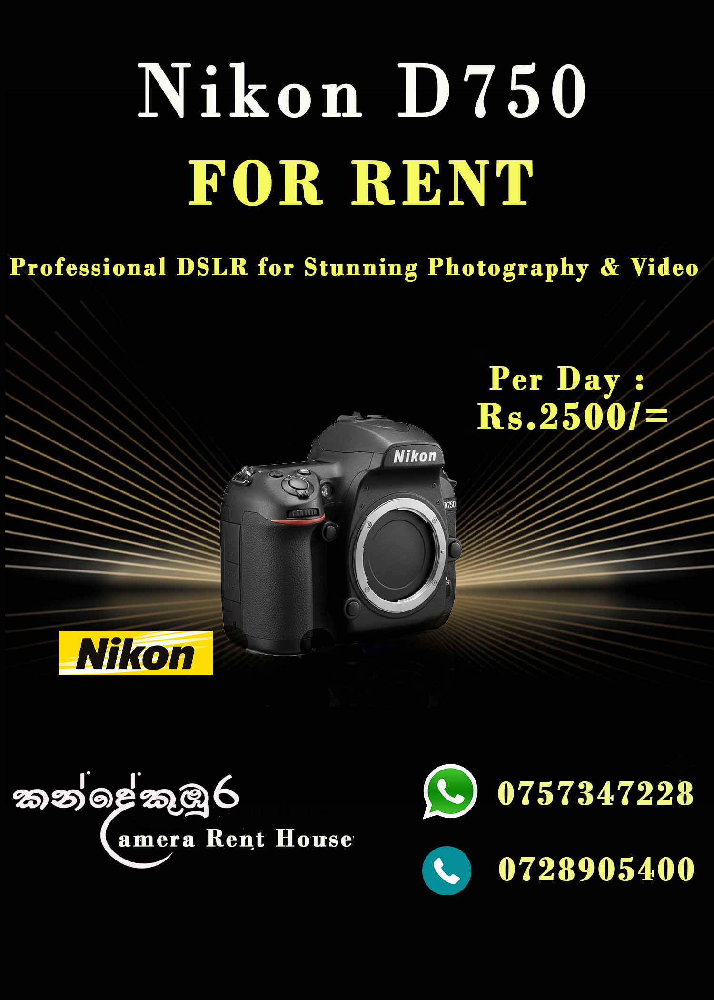
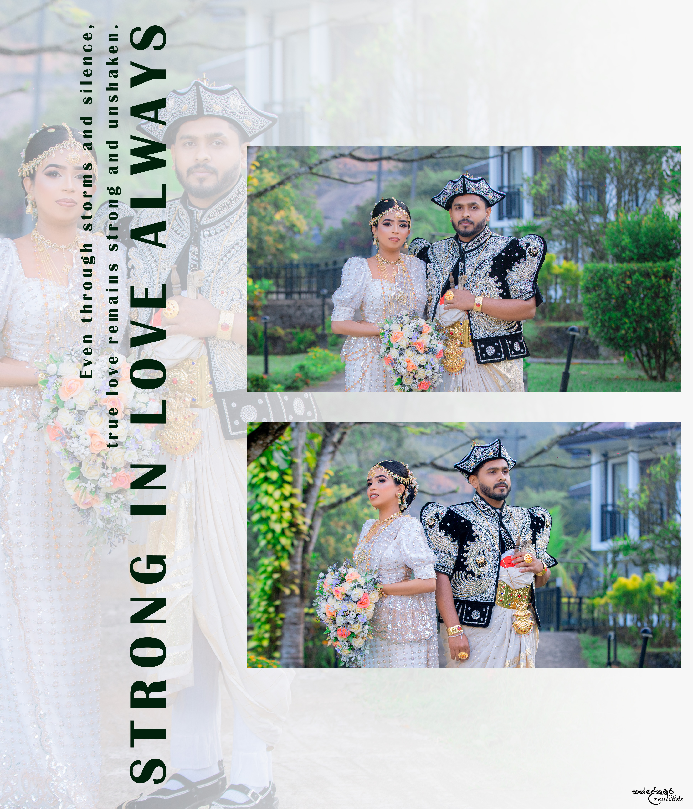
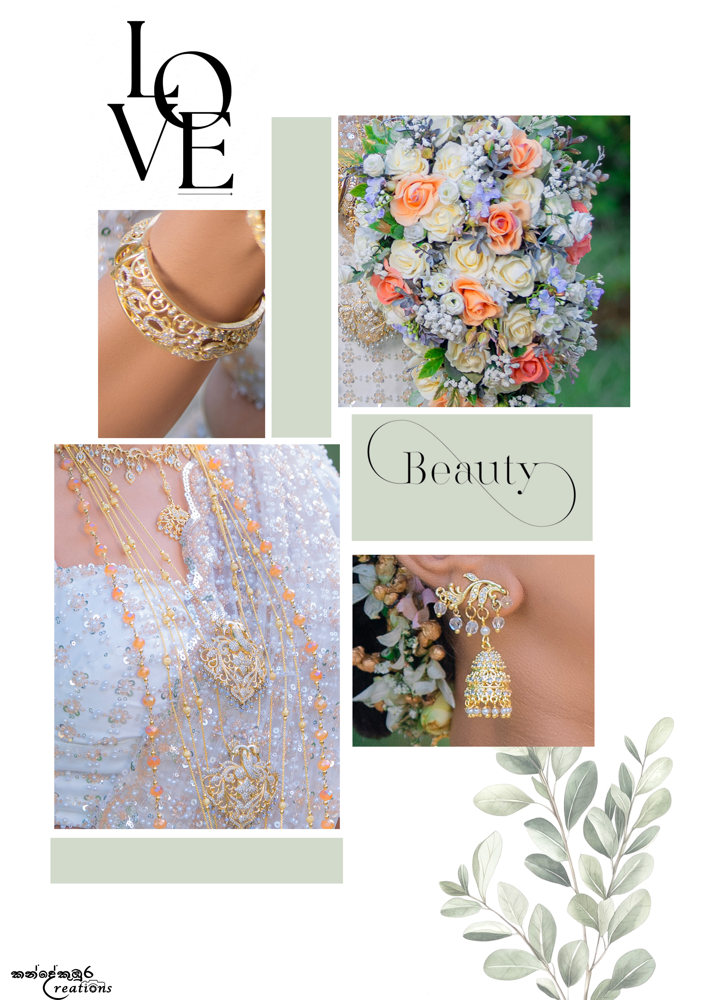

Adobe Photoshop • Canva • Branding • Social Media Design
Alongside my technical and analytical projects, I enjoy creating marketing materials and promotional graphics. These designs were created for a real camera rental and photography business using Adobe Photoshop and Canva with a focus on branding, visual communication and audience engagement.
The following collection showcases selected promotional graphics, social media advertisements and branding materials developed for a camera rental and photography business.





Working on real promotional materials helped me understand the importance of communicating ideas visually while maintaining consistent branding. These experiences strengthened my creativity, attention to detail and ability to design graphics that support business objectives.